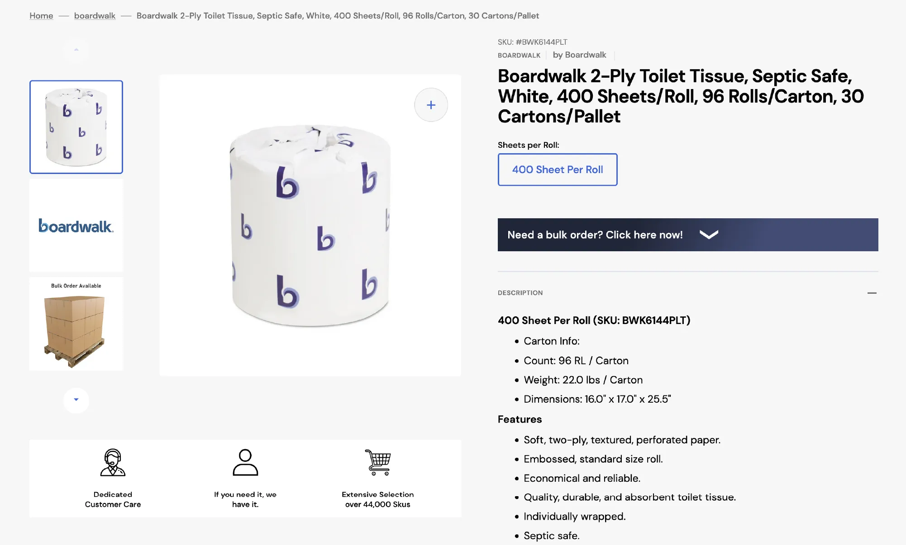
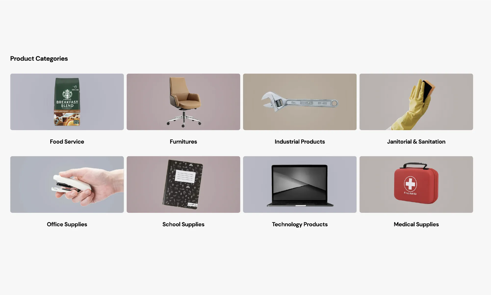
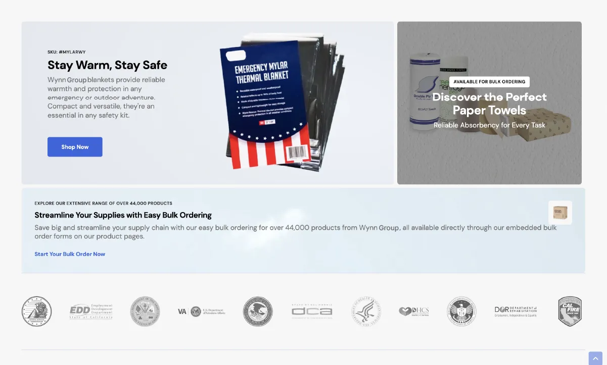

01 - Cross-Border Procurement
Managed sourcing and procurement from China into the United States for product categories including Mylar blankets, nitrile gloves, PPE, and PVC coveralls.
Cross-border procurement and e-commerce delivery supporting PPE sourcing, catalog operations, and large-scale product management for the U.S. market from 2020 through the present.
55K
SKUs managed
CN-US
Supply chain route
PPE
Product category focus
E-Com
Platform build and import



Wynn USA reflects Tecship Corp's ability to manage cross-border procurement from China into the United States for operational product categories including Mylar blankets, nitrile gloves, PPE, and PVC coveralls.
Running from 2020 through the present, the project also included e-commerce buildout, importing, and catalog management across approximately 55,000 SKUs, demonstrating the team's capacity to handle sourcing, product data, and fulfillment-oriented coordination at scale.
Managed sourcing and procurement from China into the United States for product categories including Mylar blankets, nitrile gloves, PPE, and PVC coveralls.
Coordinated the movement of sourced goods into the U.S. market with operational oversight across supplier, product, and delivery requirements.
Built and supported the e-commerce structure required to present, import, and manage large product inventories for ongoing commercial activity.
Managed a catalog footprint of approximately 55,000 SKUs, supporting product organization, storefront readiness, and ongoing operational maintenance.
Sustained the project from 2020 through the present, demonstrating Tecship Corp's ability to support continuity across procurement and digital operations over time.
Product Categories
Operating Priorities
The Wynn USA project required more than one-time procurement. It depended on maintaining continuity across sourcing, product categories, storefront structure, and long-term catalog operations over multiple years.
Tecship Corp's role combined physical procurement execution with digital commerce support, demonstrating the ability to operate across both supply chain coordination and high-volume product management.